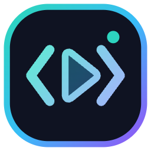
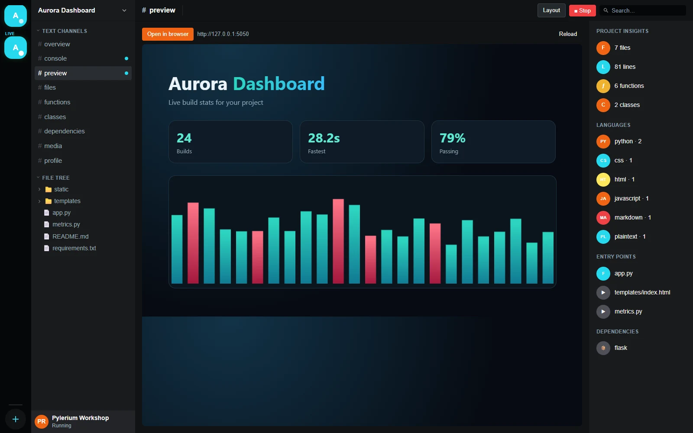
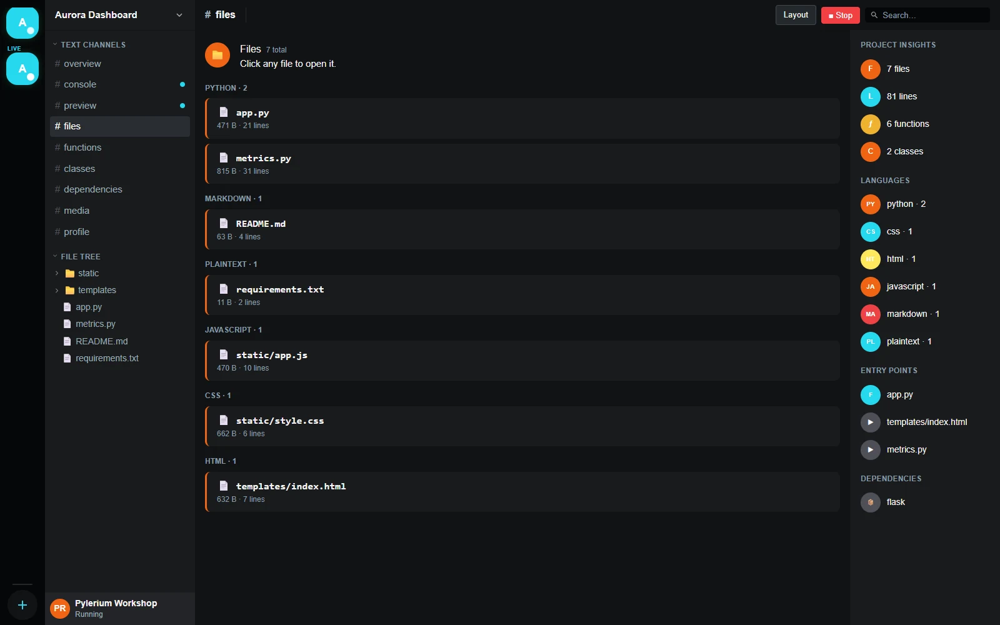
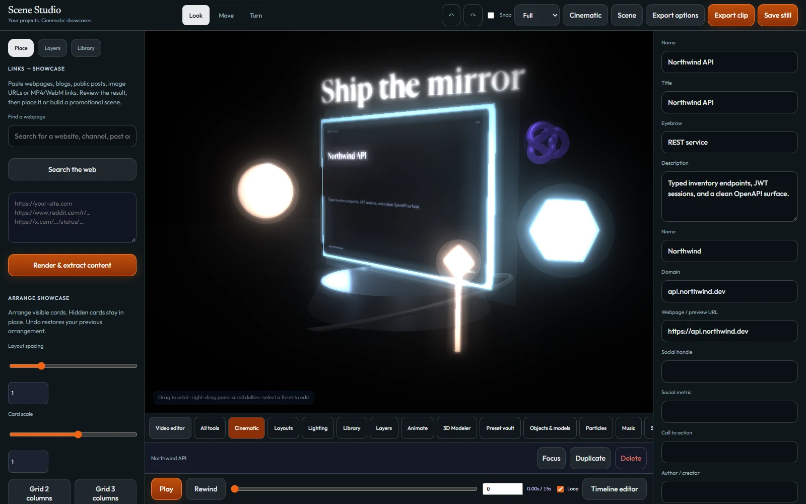
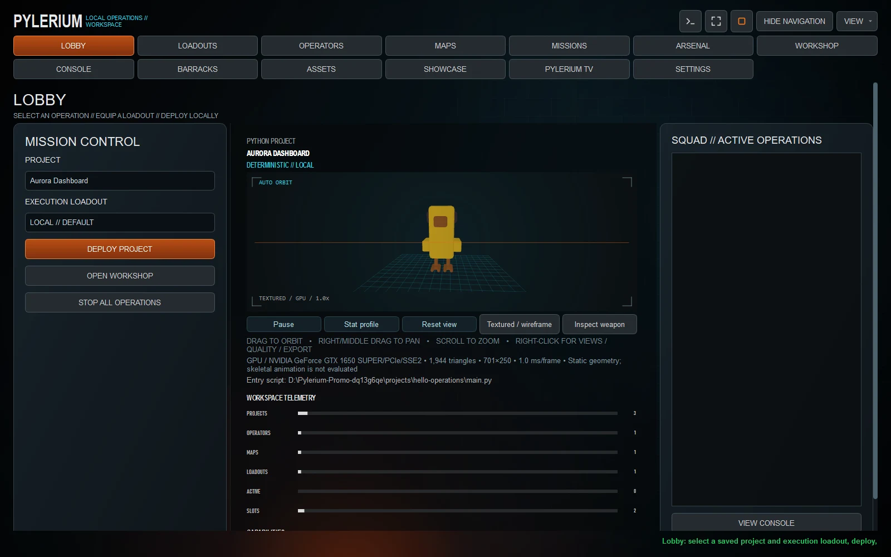
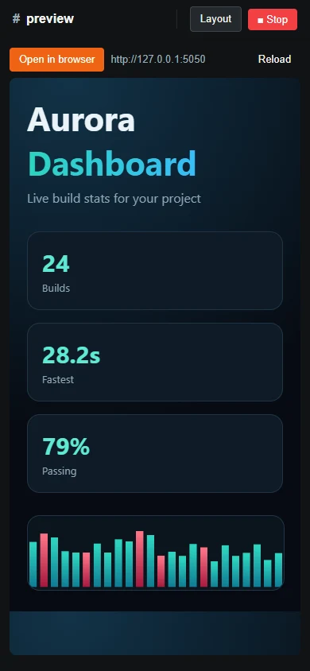

Build it. Run it. Show it off.
Pylerium Studio is a local developer workbench. Import a folder or ZIP, run Python scripts, Flask apps and HTML pages with a live preview, then turn your work into 3D showcases and YouTube Shorts. All in one app, all on your own PC.

From first run to finished showcase
Stop juggling an editor, a terminal, a browser and a screen recorder. Pylerium Studio keeps your projects, runs and showcases together.
Run anything, see it live
Python scripts, packages, Flask apps and standalone HTML pages, with a live preview tab and an interactive console.
Devcord project explorer
Drop in a folder or a ZIP. Devcord maps its files, functions, classes, dependencies, media and entry points for you.
Scene Studio
Turn a project into a cinematic 3D showcase with lighting, particles, models and music-reactive visuals, then record it.
Video editor for Shorts
Cut your recordings on a timeline, add captions, motion and audio, and export vertical videos ready for YouTube Shorts.
Preview on your phone
Scan a QR code to open your running project on your phone over your own network. Off until you switch it on.
15 plugins built in
GitHub Engine, API Hub, Prompt Hub, Jumpback, Ultimate Terminal and starter tools. Switch on only what you want.
3D models & artwork
Give every project a cover and a 3D model, inspect GLB and OBJ files on your GPU, and browse it all in the Arsenal.
Local and private
Your projects, runs and settings stay on your PC. Nothing is uploaded, and there is no account to make.
Pylerium Studio in action
Understand a project in seconds
- Folders, ZIPs or single files. Imports stream in, even big ones.
- Channels for everything. Overview, console, preview, files, functions, classes, dependencies and media.
- Finds how to run it. Flask apps, scripts and HTML entry points are detected for you.
- Dependencies, reviewed. Suggested packages are written down for you to check before anything is installed.

Show your work like a launch trailer
- Paste a link or pick a project. It builds a 3D scene around your page.
- 40 vertical presets. Layouts, lighting, particles, models and camera moves.
- Record and edit. Recordings land in the video editor, ready to cut into Shorts.

All your projects, one lobby
- Deploy with one button. Pick a project and a loadout, then run it.
- Loadouts. Reusable interpreters, environment variables, timeouts and shared data.
- Workspace telemetry. See what is running and stop everything at once.


Check it on a real phone
Turn on phone sharing, scan the QR code and your running project opens on your phone over your own Wi-Fi. Nothing leaves your network, and it is off until you switch it on.
Three steps
Download and extract
Get the zip, extract the whole folder anywhere you can write to, and open Pylerium.exe. Python is built in.
Import a project
Drop in a folder, a ZIP or a single script. Devcord indexes it and finds how to run it.
Run, then show it off
Press Run to see it live, then send it to Scene Studio and the video editor when you’re ready to share.
Free. Really.
No trial, no account, no ads. Support the studio with a coffee if it helps you.
Windows 10 & 11 · 64-bit
- Every feature and all 15 plugins
- Python built in, nothing else to install
- Checksum included so you can verify the download
- MIT licensed
Hosted on GitHub Releases.
Windows 10 or 11, 64-bit. About 1 GB free space once extracted. Your workspace is saved in %LOCALAPPDATA%\Pylerium.
Good to know
Is it really free?
Yes. Every feature, no trial and no account. If it saves you time, you can support the studio from the main site.
Do I need Python installed?
No. Pylerium Studio ships with its own Python for running projects. If a project needs extra packages, point a loadout at your own Python environment, and Pylerium uses that instead.
Windows says it protected my PC. Is that normal?
Yes, for new apps that aren’t signed yet. Choose More info → Run anyway. You can check the zip against the published SHA-256 first: Get-FileHash .\PyleriumStudio-*.zip.
Where are my projects saved?
In %LOCALAPPDATA%\Pylerium, separate from the app folder. Updating means replacing the app folder; your projects stay put. You can also set PYLERIUM_HOME for a portable workspace.
Does it send my code anywhere?
No. Everything runs locally. Phone preview only works on your own network and is off by default. Plugins like GitHub Engine only connect when you connect them.
How do updates work?
New versions appear on this page and on GitHub Releases. Download, extract over a fresh folder and keep going; your workspace is untouched.
Where do I report a bug?
Open an issue on the releases repository, or ask in our Discord.